A built-in logic analyzer: cycle-accurate square waves, bus lanes with hex values, deep history, and trackpad-native zooming.
Every net can be recorded. The analyzer keeps up to 131,072 half-steps of history — roughly 131,000
clock cycles on a kit board — and lets you scrub through all of it while the simulation keeps running.
Digital lanes render as true square waves when you are zoomed in far enough to see individual
transitions. Zoom out past one sample per pixel and the renderer switches to column aggregation: a
column that saw both a high and a low becomes a solid band. That is what a real oscilloscope shows for a
signal faster than its timebase, and it is honest in a way that skipping samples is not.
Zooming
↔ scales time from eight cycles across the screen out to the entire
recording; ↕ scales lane height. On a trackpad, a horizontal pinch zooms and moves
the slider with it; two-finger horizontal scrolling pans. Plain vertical scrolling is deliberately
left alone so it never fights the page.
48 half-steps across — Zoomed in, every transition is a true square-wave edge and the bus lane shows each hex value.
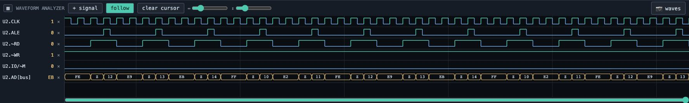
96 half-steps across — Zoomed in, every transition is a true square-wave edge and the bus lane shows each hex value.
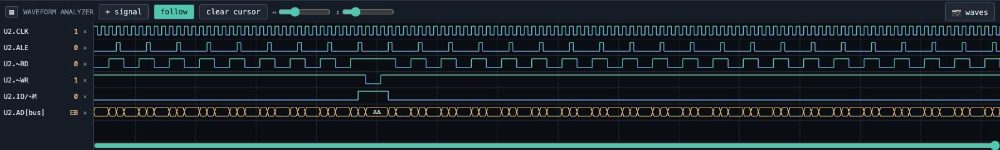
240 half-steps across — Zoomed in, every transition is a true square-wave edge and the bus lane shows each hex value.
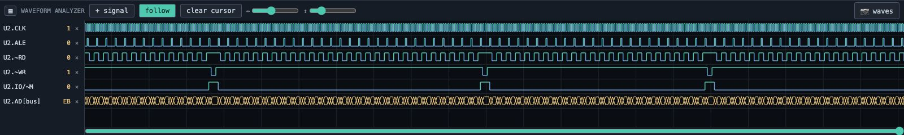
700 half-steps across — Further out, the shape of a bus cycle repeating becomes visible.
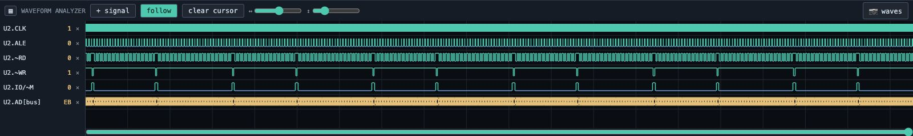
2500 half-steps across — Further out, the shape of a bus cycle repeating becomes visible.
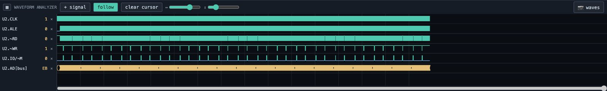
12000 half-steps across — Past one sample per pixel the renderer aggregates each column: a column that saw both a high and a low becomes a solid band — what a real oscilloscope shows for a signal faster than its timebase.
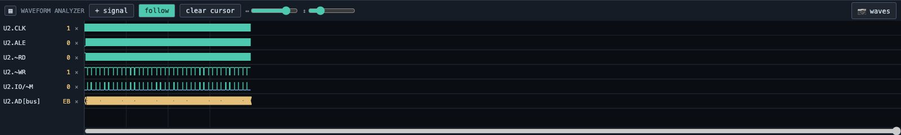
40000 half-steps across — Past one sample per pixel the renderer aggregates each column: a column that saw both a high and a low becomes a solid band — what a real oscilloscope shows for a signal faster than its timebase.
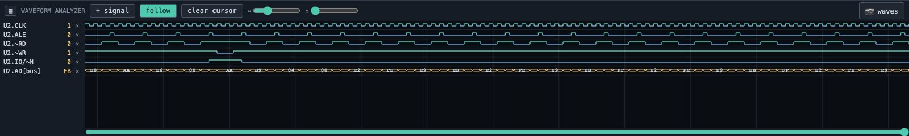
Lane height 60% — Vertical zoom runs from 60% to 250%; the signal names resize in lockstep so labels stay aligned to their lanes.
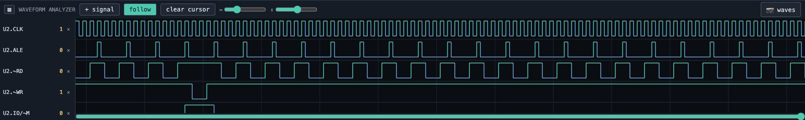
Lane height 160% — Vertical zoom runs from 60% to 250%; the signal names resize in lockstep so labels stay aligned to their lanes.
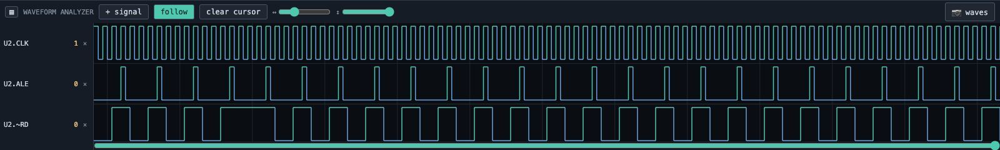
Lane height 250% — Vertical zoom runs from 60% to 250%; the signal names resize in lockstep so labels stay aligned to their lanes.
Reading waves
Pin lanes show 0, 1, Z and X. Bus lanes are drawn as hexagonal bands with the hex
value inside, exactly like a commercial analyzer. The name column shows each signal's value at the
cursor, or now.
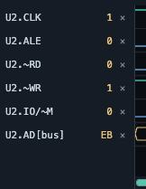
Signal list with live values — Each lane names its signal and shows the value at the cursor, or now: 0, 1, Z or X for pins, hex for buses.
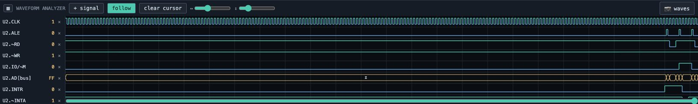
An interrupt on the wire — On the interrupt lab the default signal set includes INTR and ~INTA — watch INTR rise, then two ~INTA pulses, the second carrying the vector on AD0-7.
The cursor
Click anywhere to drop a time cursor. It reports the half-step and cycle number, and
every lane reports its value at that moment.
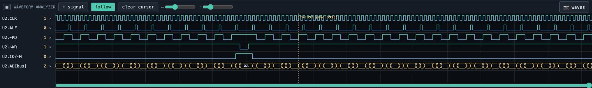
The time cursor — Click anywhere to drop a cursor: it reports the half-step and the cycle number, and every lane reports its value at that moment.
History
The scrollbar under the canvas spans exactly what has been recorded. Drag it to browse;
drag it to the right edge to re-attach to live time.
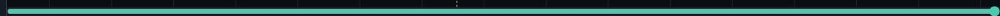
The history scrollbar — The recording keeps up to 131,072 half-steps. Drag the bar to browse it; drag to the right edge to re-attach to live time.
Adding signals
Any pin on any chip can be added, and numbered pin families are offered as ready
made bus groups that become a single hex lane.
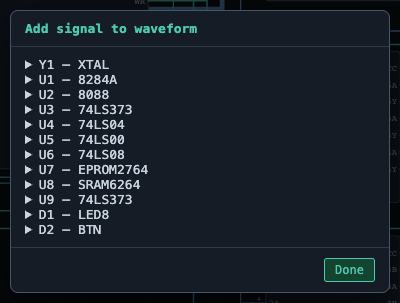
Add any signal — Every chip on the board, expandable to its pins, with automatic bus groups (⛁ A0..A19) that become a single hex lane.